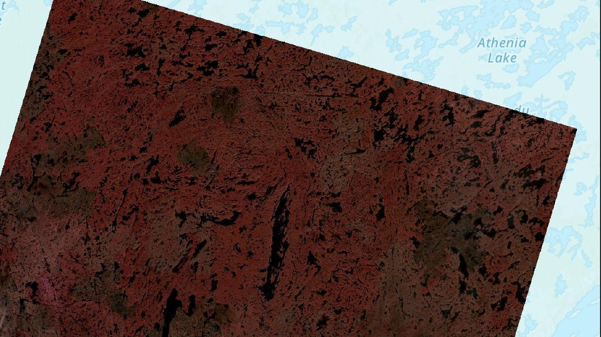
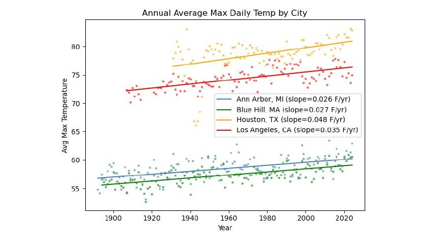

Hi, I'm Trevor
Studying how ecosystems work, with a background in oceanography, geology, and ecology, so I can eventually help design places that work with them too.
Selected Work
A few recent projects. See all projects →

Aquifer Characterization
Turns out the reason our Wyoming field station's well pumps 150 gallons a minute isn't luck. Running seismic and resistivity surveys, we traced it to a gravel layer feeding fractured bedrock below, recharged by a nearby mountain stream.

Forest Fires in Yellowknife
Running zonal statistics on before-and-after Landsat imagery, I found reflectance variability jumped nearly ninefold after the 2023 Yellowknife wildfires, a number that finally put real scale behind how dramatically the landscape changed.

Weather & Meteorological Analysis
A single day of data (my birthday, of all days) showed no trend at all, but once I averaged temperatures across the whole year, a clear warming signal emerged in all four cities, with Houston climbing fastest.
Opportunities I'm Chasing
- Landscape Architecture Grad Programs
- Internships & Job Shadowing
- Full-Time Roles
- Active Research Projects
- Mentorship & Informational Chats